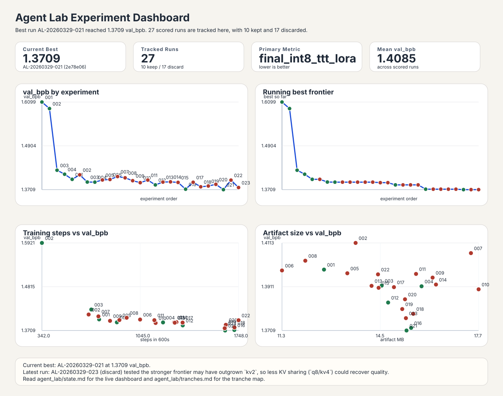

Agent Lab Experiment Dashboard
This dashboard is generated from agent_lab/experiments.tsv. Re-run
python3 scripts/agent_lab/plot_experiments.py after logging new experiments.

Top Runs
| Exp | val_bpb | Status | Notes |
|---|---|---|---|
| AL-20260329-030 | 1.3564 | keep | 1650 steps in 600.1s; artifact 15.80 MB, valid; zlib 1.3915; TTT eval 813s; higher head |
| AL-20260329-027 | 1.3582 | keep | 1651 steps in 600.3s; artifact 15.77 MB, valid; zlib 1.3938; TTT eval 813s; tighter soft |
| AL-20260329-029 | 1.3596 | discard | 1651 steps in 600.2s; artifact 15.74 MB, valid; zlib 1.3942; TTT eval 813s; slower head |
| AL-20260329-026 | 1.3614 | keep | 1651 steps in 600.1s; artifact 15.78 MB, valid; zlib 1.3962; TTT eval 812s; untied outpu |
| AL-20260329-028 | 1.3628 | discard | 1650 steps in 600.1s; artifact 15.77 MB, valid; zlib 1.3974; TTT eval 813s; looser softc |
| AL-20260329-021 | 1.3709 | keep | 1652 steps in 600.2s; artifact 15.33 MB, valid; zlib 1.4079; TTT eval 813s; fewer wider |
| AL-20260329-016 | 1.3721 | keep | 1718 steps in 600.1s; artifact 15.48 MB, valid; zlib 1.4091; TTT eval 801s; more steps p |
| AL-20260329-025 | 1.3743 | discard | 1717 steps in 600.2s; artifact 15.48 MB, valid; zlib 1.4111; TTT eval 801s; sharper QK i |
Recent Keeps
| Exp | val_bpb | Status | Notes |
|---|---|---|---|
| AL-20260329-003 | 1.3916 | keep | 878 steps in 600.6s; artifact 14.52 MB; zlib 1.4259; TTT eval 886s; depth was step-starv |
| AL-20260329-004 | 1.3913 | keep | 1208 steps in 600.1s; artifact 15.82 MB; zlib 1.4270; only a 0.0003 improvement over the |
| AL-20260329-012 | 1.3838 | keep | 1349 steps in 600.4s; artifact 14.73 MB, valid; zlib 1.4200; TTT eval 801s; one MLP-notc |
| AL-20260329-016 | 1.3721 | keep | 1718 steps in 600.1s; artifact 15.48 MB, valid; zlib 1.4091; TTT eval 801s; more steps p |
| AL-20260329-021 | 1.3709 | keep | 1652 steps in 600.2s; artifact 15.33 MB, valid; zlib 1.4079; TTT eval 813s; fewer wider |
| AL-20260329-026 | 1.3614 | keep | 1651 steps in 600.1s; artifact 15.78 MB, valid; zlib 1.3962; TTT eval 812s; untied outpu |
| AL-20260329-027 | 1.3582 | keep | 1651 steps in 600.3s; artifact 15.77 MB, valid; zlib 1.3938; TTT eval 813s; tighter soft |
| AL-20260329-030 | 1.3564 | keep | 1650 steps in 600.1s; artifact 15.80 MB, valid; zlib 1.3915; TTT eval 813s; higher head |